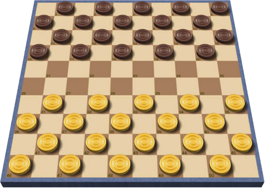

Dama
Igra se na ploči od sto polja, 10x10, među kojima postoji podjednaki broj belih i crnih, pedeset. Igra se samo po tamnim poljima. Donje krajnje polje sa desne strane oba igrača mora biti belo. Pre početka se postavljaju figure, koje su u stvari okrugle pločice nešto manjeg promera od polja na tabli. Svaki igrač ima po 20 figura. Igru počinje beli. Cilj je osvojili sve protivničke figure ili im onemogućiti sledeći potez, odnosno blokirati ih.
Obična figura (na početku su sve obične) kreće se napred po jedno polje dijagonalno prema protivniku; kada dođe do protivničke figure koja iza sebe ima slobodno polje, preskače je i uzima. Kada dođe do polja u poslednjem redu, pretvara se u damu, koja se sastoji od dve obične figure jedna na drugoj. Dama se može kretati u svim pravcima po dijagonali, za koliko god igrač želi polja.